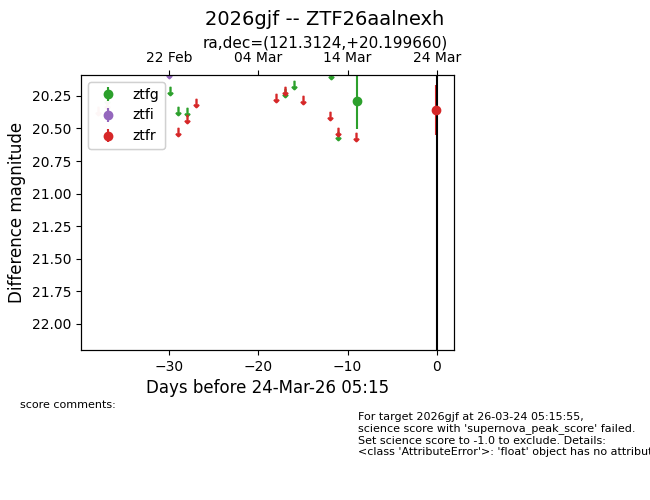
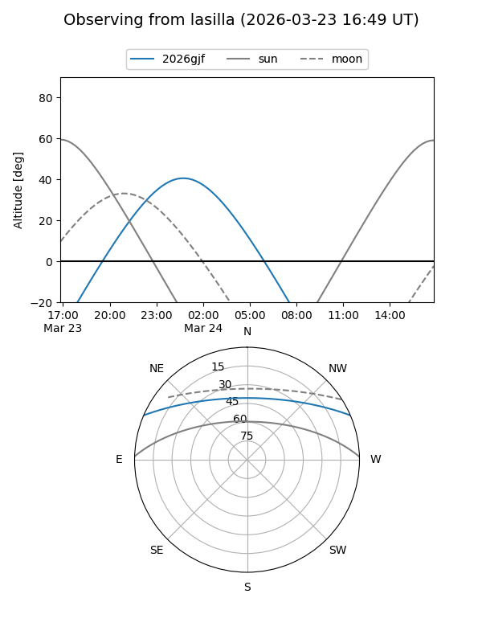
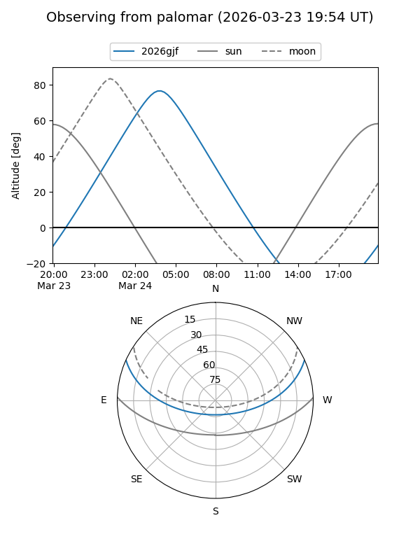

2026gjf
Target 2026gjf at 2026-03-24 05:19
Aliases and brokers:
FINK: link
Lasair: link
ALeRCE: link
TNS: link
YSE: link
alt names
ZTF26aalnexh (ztf,fink_ztf)
2026gjf (tns,yse)
Coordinates:
equatorial (ra, dec) = 121.3124,+20.19966
equatorial (HMS+DMS) = 08:05:14.98,+20:11:58.77
galactic (l, b) = (202.0059,+24.94992)
Flags:
Photometry:
last ztfg=20.29, ztfr=20.36
1 ztfg, 1 ztfr detections
Lightcurve

Visibility


Additional plots